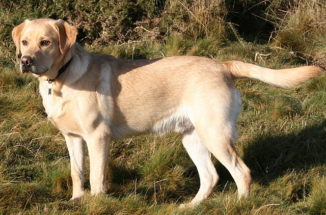

There are many different breeds of dogs out there. All these dogs have different personalities and physical features. Some are friendly, some shy, and very energetic. Dogs could be short, tall, or have a stubby tail.
Dogs have been being bred for a long time. These dogs have evolved and now there are many new breeds. Such as the golden doodle, a mix between a standard poodle and a golden retriever.
Yellow Labradors are the cutest dogs ever. They are a yellow golden color, almost like a croissant, with floppy ears. These dogs were bred to retireve ducks from the water when its owner would shoot it down. They originally came from the British and are a medium-large breed and come in different varieties such as the Yellow, Chocolate, and the Black Labrador Retriever. These dogs are very helpful to society and some are even famous. Some of these famous dogs are Endal(Service Dog), Frida(Search and Rescue Dog), and Zanjeer(Detection Dog).
Below I have listed some official websites if you want more information about other dog breeds.